Название компании вписано внутрь каждого резюме, где человек в ней работал. Копия появляется в момент вставки документа и дальше живёт своей жизнью.
проверено: countDocuments по resumes_embedРаздел 1 · MongoDB · занятие 2 из 5
Embedding и referencing:
проектирование от операций
На прошлой паре мы положили резюме одним документом и не спрашивали, почему именно так. Сегодня спрашиваем. Каждое утверждение занятия проверяется прямо на стенде: сначала запрос, потом кадр с ответом сервера, потом вывод. Ни одного числа с чужих слов.
90 минут6 частей22 кадра со стендаитог — ADR-002
Как устроено занятие
Шесть частей. В каждой сначала запрос, потом кадр с результатом, потом одна строка вывода
- 1Заявка — заказчик просит переименовать компанию. Считаем, в скольких документах базы лежит это название.кадры: консоль mongosh, счётчик Compass
- 2Две формы — одна связь, собранная вложением и ссылкой. Смотрим документы и читаем их запросами.кадры: документ, справочник,
$lookup - 3Счёт за чтение — сколько стоит показать карточку в каждой форме. Замер на 1000 повторов и на большой базе.кадры: замеры, план запроса, размеры
- 4Счёт за правку — выполняем заявку и смотрим, что осталось непоправленным.кадры:
updateMany, счётчики после правки - 5Предел — до какого размера растёт встроенный массив и что говорит сервер на границе.кадры: два настоящих отказа, документация
- 6Правило — три вопроса, решающая карта, гибридная форма и бланк ADR-002.кадры: таблица MongoDB, отказ транзакции
Все кадры сняты на стенде занятия — том же, что раздан вам. Любой запрос с экрана можно вставить в свою консоль и получить своё число; расхождение в миллисекундах нормально, расхождение в числе документов означает, что данные загрузились не так.
Часть первая
Заявка: посчитать, где в базе лежит одно и то же название
01
- 04письмо от заказчика: компания сменила названиечто вообще просят сделать
- 05три запроса
countDocumentsпо трём коллекциямкадр консоли: 49, 5, 1 - 06тот же счёт в Compass, без консоликадр счётчика: 1 – 25 of 49
- 07вывод части: одно значение в трёх местахоткуда берётся цена правки
Часть 1 · шаг 1
Заказчик пишет одну строку. Сколько стоит её выполнить — зависит от того, как спроектирован документ
change request · CR-014
от: отдел партнёрских программ кому: команда data platform тема: смена названия компании Компания «Ozon Tech» с 1 сентября называется «Ozon Технологии». Поправьте, пожалуйста, везде, где это название показывается кандидатам. Когда будет готово?
Заявка честная и короткая, а ответ на неё — от «полминуты» до «полдня и потом ещё неделю ловим хвосты». Разница не в аккуратности исполнителя: она была заложена тогда, когда кто-то решил, где будет жить название компании.
Прежде чем отвечать про сроки, инженер делает одно действие: считает, в скольких документах это название вообще встречается. Именно это мы сейчас и сделаем — тремя запросами.
База hh на стенде: resumes_embed — 150 резюме с вложенной компанией, interviews — 60 приглашений на собеседование, companies — справочник из 8 компаний.
Часть 1 · шаг 2 · консоль mongosh внутри Compass
Три одинаковых запроса по трём коллекциям — и три разных ответа
db.resumes_embed.countDocuments({ "experience.company.name": "Ozon Tech" })
db.interviews.countDocuments({ "company.name": "Ozon Tech" })
db.companies.countDocuments({ name: "Ozon Tech" })
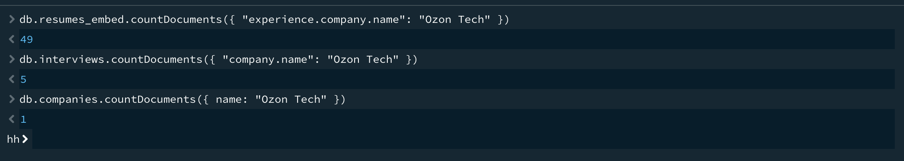
hh49 резюме хранят копию названия внутри массива experience
5 приглашений хранят вторую копию — их пишет другая часть системы
1 документ справочника: здесь название живёт в единственном экземпляре
Как читать запрос. countDocuments возвращает число документов, подходящих под фильтр. Путь "experience.company.name" — это спуск по вложенности: массив experience → объект company → поле name. Условие проверяется для каждого элемента массива, индекс элемента писать не нужно.
Часть 1 · шаг 3 · то же самое мышкой
Тот же фильтр в окне коллекции: счётчик показывает то же число
FILTER { "experience.company.name": "Ozon Tech" } → Find
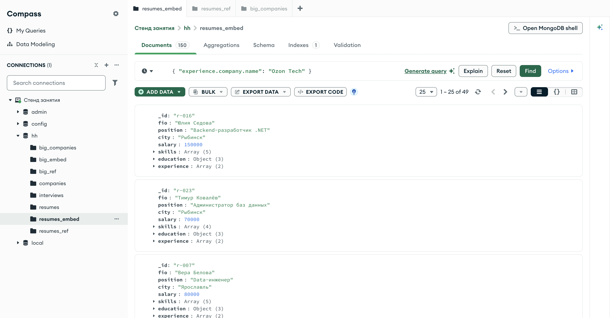
1 – 25 of 4949 тот же результат, что в консоли: инструмент разный, запрос один и тот же
Зачем показывать дважды. На паре половина группы работает мышкой, половина — в консоли. Полезно один раз увидеть, что строка FILTER в Compass и аргумент find в консоли — это буквально один и тот же документ-фильтр, просто в разных окнах.
Счётчик 1 – 25 of 49 читается так: показано 25 документов из 49 найденных. Число справа от of — то, что нам нужно.
Проверьте у себя. Если у вас не 49, данные загрузились дважды или не полностью: перезалейте seed/ с ключом --drop.
Часть 1 · вывод
Одно значение лежит в базе 55 раз. Это и есть цена, которую мы сегодня учимся считать
Вторая коллекция, о которой при правке резюме легко не вспомнить: её пишет другая часть системы и другой отдел.
проверено: countDocuments по interviewsВ коллекции companies компания записана один раз. Резюме из resumes_ref ссылаются на неё по _id — и своей копии названия не хранят.
Вопрос, на который отвечает всё занятие: почему одни данные оказались размазаны по 49 документам, а другие лежат в одном? Это не небрежность и не ошибка — это два разных способа связать данные. У каждого своя цена, и дальше мы выставим счёт каждому.
Часть вторая
Две формы одной связи: как они выглядят и как их читать
02
- 09определения: вложение и ссылкаплюс формулировка из документации
- 10документ с вложенной компанией в Compassкадр: ветка experience → company
- 11тот же человек в ссылочной форме и справочниккадр: company_id и коллекция companies
- 12чтение вложенной формы одним запросомкадр консоли: findOne и ответ
- 13чтение ссылочной формы двумя запросамикадр консоли: ссылки, потом компании
- 14
$lookup— то же двумя запросами, но на серверекадр: конвейер и предпросмотр
Часть 2 · шаг 1 · определения
Связь между сущностями в MongoDB выражается двумя способами, и третьего нет
Компания записана прямо в резюме: experience[0].company.name. Читается вместе с резюме, меняется вместе с резюме, живёт ровно столько, сколько живёт резюме. Отдельной коллекции для компаний нет.
В резюме записано experience[0].company_id: "c-ozon", а сама компания — документ коллекции companies. Чтобы показать название, за ним нужно сходить: вторым запросом или этапом $lookup.
«To link related data, you can either: embed related data within a single document or reference related data stored in a separate collection.»
MongoDB Manual · Data Modeling · Best PracticesВ этом списке нет слова «правильно». Документация даёт два инструмента и таблицу сценариев — её мы разберём в шестой части, когда соберём собственную карту решения.
Часть 2 · шаг 2 · вложение в Compass
Вложенная компания: объект внутри элемента массива experience
FILTER { _id: "r-001" } → вид JSON, все ветки раскрыты
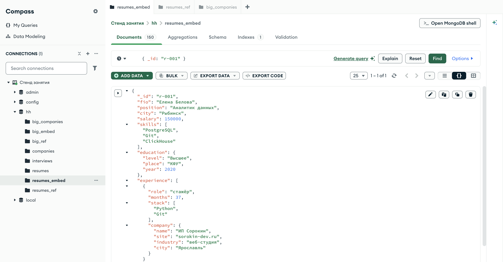
r-001 целикомВсё, что нужно показать в карточке, лежит в одном документе: должность, зарплата, навыки, образование и компания с сайтом, отраслью и городом
Обратите внимание на отступы. company — не соседнее поле резюме, а объект внутри элемента массива experience. Путь к названию читается через точки: experience.company.name — именно так он пишется в фильтре, и именно так мы его писали на прошлом экране.
Кнопка раскрытия веток стоит слева от документа. Пока документ маленький, ею удобно пользоваться; на резюме с сотней мест работы вы её уже не нажмёте — это первый сигнал, что форма выбрана неудачно.
Часть 2 · шаг 3 · ссылка в Compass
Тот же человек в ссылочной форме: на месте компании — строка-идентификатор
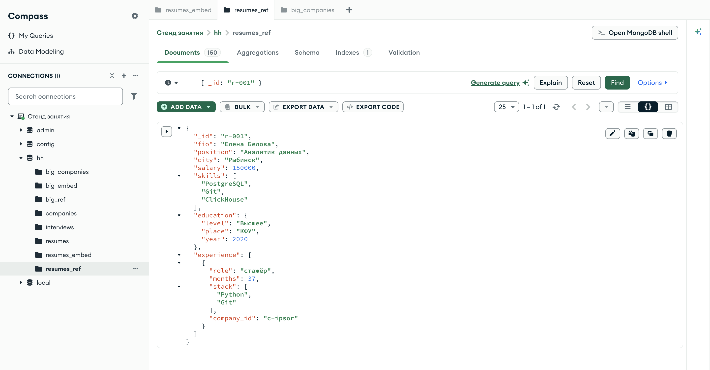
company_id: "c-ipsor" вместо объекта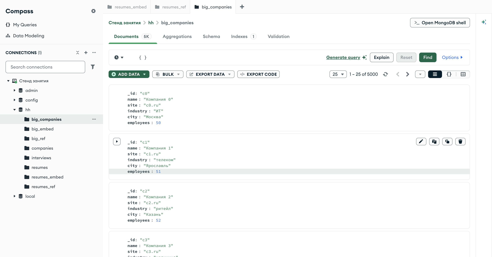
Резюме стало короче на четыре поля, а название компании теперь существует в базе в одном экземпляре. Цена — оно больше не лежит рядом с резюме, и за ним придётся идти отдельно
Про идентификатор. Компаниям мы записали осмысленные _id — "c-ozon", "c-ipsor". MongoDB это разрешает: _id обязателен, но не обязан быть ObjectId. В учебной базе так нагляднее; в рабочей чаще оставляют ObjectId, потому что осмысленный ключ рано или поздно приходится менять — и тогда меняются все ссылки на него.
Часть 2 · шаг 4 · читаем вложенную форму
Один запрос — и в ответе уже есть название компании
db.resumes_embed.findOne(
{ _id: "r-001" },
{ fio: 1, "experience.role": 1, "experience.company": 1 })
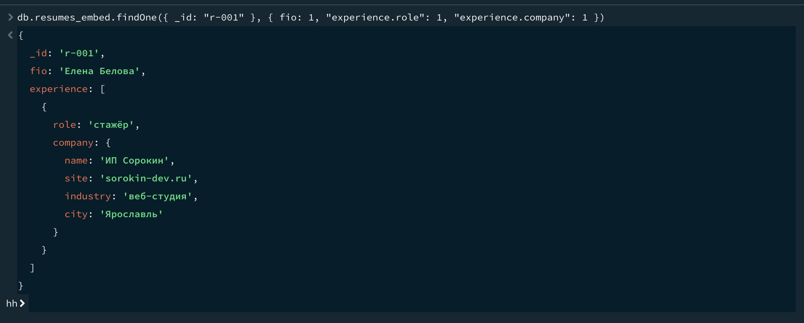
company1 обращение к базе — и карточку можно рисовать
Второй аргумент findOne — проекция: перечень полей, которые нужно вернуть. { fio: 1 } означает «верни это поле»; всё, что не перечислено, кроме _id, в ответ не попадёт. В Compass то же самое прячется за кнопкой Options → Project.
Проекция здесь не для красоты: без неё ответ занял бы полтора экрана. На рабочих данных она ещё и экономит трафик — сервер не отправит того, что не просили.
Часть 2 · шаг 5 · читаем ссылочную форму
Тот же результат, но в два захода: сначала ссылки, потом компании
const r = db.resumes_ref.findOne({ _id: "r-001" })
db.companies.find({ _id: { $in: r.experience.map(x => x.company_id) } })
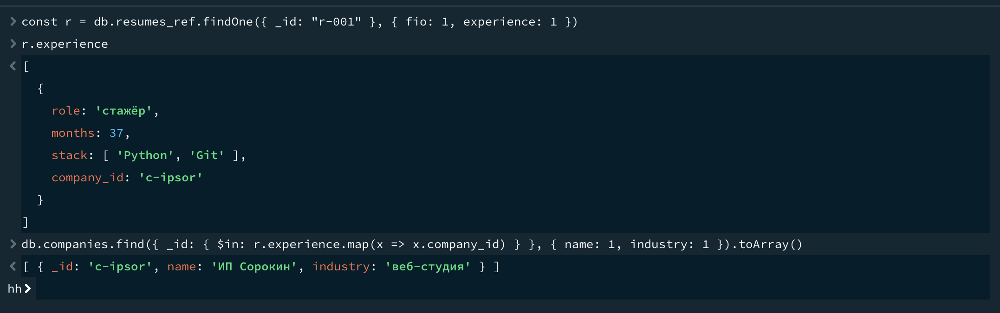
company_id → документы компаний2 обращения к базе вместо одного — и результат приложению нужно склеить самому
Оператор $in берёт массив значений и находит документы, у которых поле совпало с любым из них. Так за компаниями идут одним запросом, а не по одному на каждую ссылку: иначе получилось бы не два обращения, а четыре.
Это и есть та самая «цена ссылки», о которой говорят в спорах про MongoDB. Пока она выглядит безобидно: два запроса вместо одного. В третьей части мы её измерим.
Часть 2 · шаг 6 · тот же сбор, но на сервере
$lookup — этап конвейера, который подставляет документы из другой коллекции
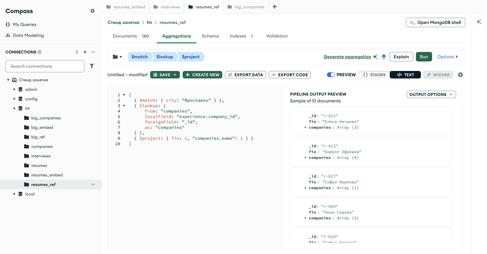
{ $lookup: {
from: "companies",
localField: "experience.company_id",
foreignField: "_id",
as: "companies" } }
В каждом резюме появился массив companies — от одной до четырёх компаний, по числу мест работы. Приложение получает готовую карточку одним запросом
Четыре поля этапа. from — коллекция, откуда берём; localField — поле нашего документа со ссылкой; foreignField — поле чужого документа, с которым сравниваем; as — имя нового поля-массива для найденного.
Чего $lookup не делает. Он не связывает документы навсегда и не проверяет, что ссылка ведёт в существующий документ: удалили компанию — вернётся пустой массив. Целостность ссылок в MongoDB держит приложение, а не сервер.
Часть третья
Счёт за чтение: во что обходится каждая форма, когда данные показывают
03
- 161000 чтений карточки в обеих формахкадр консоли: 511 мс против 822 мс
- 17то же на базе в 20 000 резюме и 5 000 компанийкадр консоли: 49, 76 и 546 мс
- 18что показывает план запросакадр Explain Plan: 150 документов просмотрено
- 19сколько места занимает дублированиекадры: размеры коллекций в консоли и в Compass
- 20вывод части: чтение выигрывает вложениеи на сколько именно
Часть 3 · шаг 1 · замер на 1000 повторов
Читаем одну и ту же карточку тысячу раз в каждой форме
const t0 = Date.now();
for (let i=0; i<1000; i++) db.resumes_embed.findOne({_id: ids[i%150]});
Date.now() - t0
// и то же самое для ссылочной формы — два запроса на итерацию
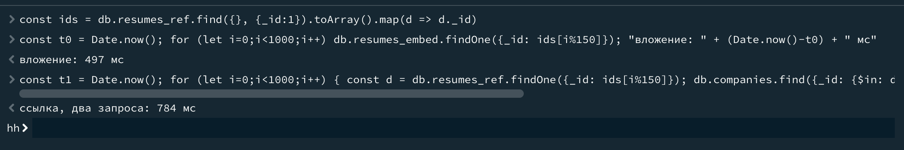
ВЛОЖЕНИЕ1 обращение
1000 карточек497 мс
ССЫЛКА2 обращения
1000 карточек784 мс
Как читать этот счёт. Разница в 287 мс на тысячу карточек — это 0,3 мс на карточку, и сама по себе она ничего не значит. Значение имеет строка «обращений к базе»: одно остаётся одним и на миллионе документов, а два превращаются в два похода на каждую строку списка.
Почему числа именно такие. Замер идёт из консоли Compass, то есть через клиент: в каждую итерацию входит и работа драйвера. Важна не абсолютная величина, а отношение — оно устойчиво от прогона к прогону: ×1,6.
Часть 3 · шаг 2 · то же на большой базе
500 карточек, но в базе 20 000 резюме и 5 000 компаний
db.big_embed.find({city: "Ярославль"}).limit(500)
db.big_ref.aggregate([… $lookup по _id …])
db.big_ref.aggregate([… $lookup по site …])
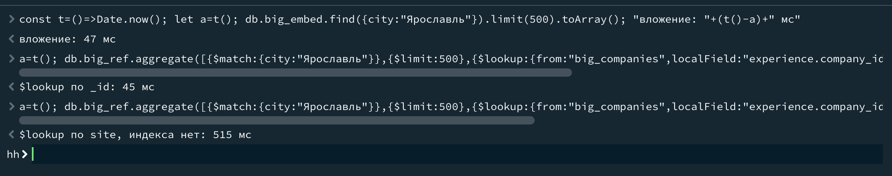
big_embed, big_ref, big_companies — собираются скриптом scale.mongodb.js47 мс — вложение, один запрос без всяких этапов
45 мс — ссылка через $lookup по _id, то есть по полю с индексом
515 мс — тот же $lookup, но по полю site, у которого индекса нет
Первые две строки почти равны — и это честный результат. Когда соединение идёт по _id, сервер делает его сам и почти бесплатно; разница в пару миллисекунд здесь в пределах разброса. Значит, довод «ссылка медленнее» на таких данных не работает: на чтении ссылка проигрывает не временем, а вторым обращением из приложения — тем, что мы видели на экране 16.
А вот третья строка — приговор. Тот же $lookup, но по полю без индекса, дороже в 11 раз: серверу пришлось перебирать чужую коллекцию целиком на каждое совпадение. Соединяйте по _id — по нему индекс есть всегда; откуда берутся эти одиннадцать раз, разберём на занятии 4.
Часть 3 · шаг 3 · что говорит план запроса
Кнопка Explain показывает, сколько документов сервер прочитал ради ответа
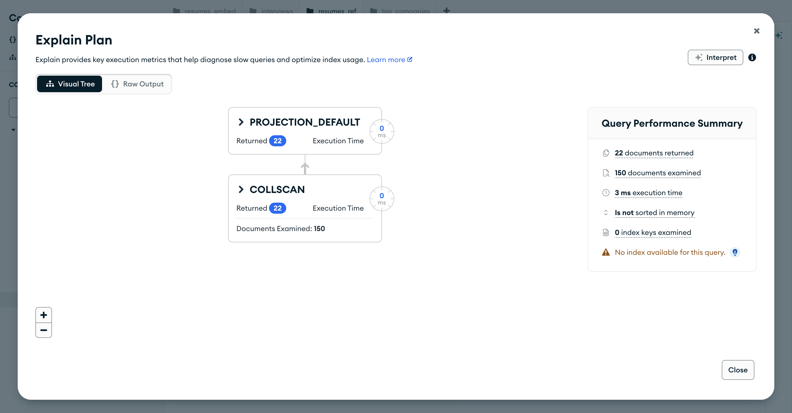
$match и $lookup22 документа вернулось, 150 просмотрено — сервер прочитал всю коллекцию, чтобы найти 22 подходящих
COLLSCAN в дереве плана — это «полный просмотр коллекции». Рядом Compass честно пишет: No index available for this query, индексных ключей просмотрено ноль. На 150 документах это 3 мс, на 20 000 — уже те самые сотни миллисекунд с предыдущего экрана.
Почему этот кадр здесь, а не на занятии про индексы. Затем, чтобы отделить две разные цены: цену второй коллекции (её мы считаем сегодня) и цену отсутствующего индекса (её считаем на занятии 4). Их часто путают и списывают всё на «Mongo медленный».
Часть 3 · шаг 4 · сколько места занимает копия
Дублирование видно и в байтах — двумя способами, оба без единой строки кода
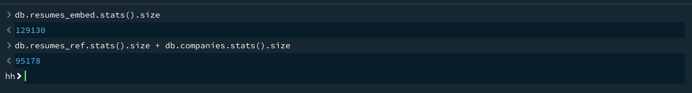
db.resumes_embed.stats().size и сумма двух коллекций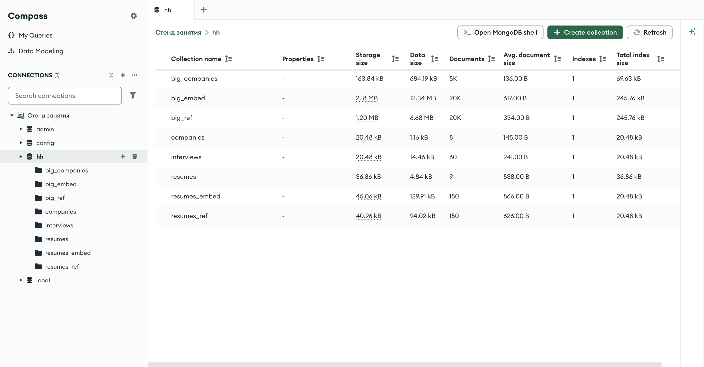
Avg. document size по всем коллекциям базы129 914 байт против 95 194 — вложенная форма тяжелее в 1,36 раза. В среднем на документ: 866 байт против 626
Разница — это те самые повторяющиеся поля: название, сайт, отрасль и город компании, переписанные в каждое место работы каждого резюме. На большой базе то же соотношение: big_embed — 12,34 МБ, big_ref с справочником — 7,37 МБ.
Часть 3 · вывод
На чтении выигрывает вложение — и выигрывает не в миллисекундах, а в числе обращений
Тысяча карточек в консоли. Отношение ×1,6 держится от прогона к прогону, потому что ссылочной форме нужно два обращения там, где вложенной хватает одного.
кадр на экране 16Пятьсот карточек на базе в двадцать тысяч резюме: когда join делает сам сервер по _id, формы равны. Но 515 мс, если соединять по полю без индекса.
129 914 байт против 95 194 на тех же данных. Копия названия компании занимает место в каждом документе, где она есть.
кадры на экране 19Пока счёт 1:0 в пользу вложения — но выиграно не время, а простота: одно обращение вместо двух и никакой сборки в приложении. Если бы данные только читались, разговор был бы закончен. Поэтому следующая часть — про операцию, которая всё переворачивает.
Часть четвёртая
Счёт за правку: выполняем заявку CR-014 и смотрим, что осталось
04
- 22две правки:
updateManyиupdateOneкадр консоли: modifiedCount 49 и 1 - 23считаем копии зановокадр консоли: 0, 0 и всё те же 5
- 24забытая копия глазами Compassкадры: пусто в резюме, пять в приглашениях
- 25вывод части: цена копии — не место, а рассинхрончто записывают в остаточный риск
Часть 4 · шаг 1 · выполняем заявку
Одна и та же задача: в одной форме — 49 изменённых документов, в другой — один
db.resumes_embed.updateMany(
{ "experience.company.name": "Ozon Tech" },
{ $set: { "experience.$[e].company.name": "Ozon Технологии" } },
{ arrayFilters: [ { "e.company.name": "Ozon Tech" } ] })
db.companies.updateOne({ _id: "c-ozon" },
{ $set: { name: "Ozon Технологии" } })
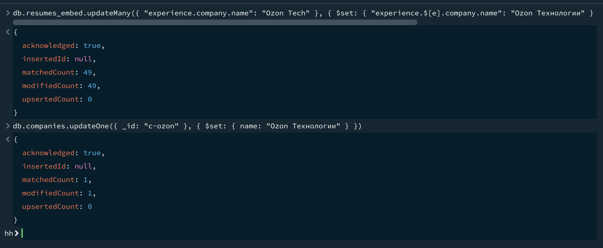
modifiedCount: 49 и modifiedCount: 149 документов пришлось изменить во вложенной форме
1 документ — в ссылочной, и это тот же самый результат для пользователя
Что такое arrayFilters. Запись $[e] означает «все элементы массива, подходящие под условие e», а само условие описано в arrayFilters. Без этого пришлось бы писать позиционный оператор $, который меняет только первый подходящий элемент — и часть копий осталась бы старой.
Обе правки заняли миллисекунды. Считаем мы не время, а число тронутых документов: именно оно превращается в риск. Сорок девять документов — это сорок девять шансов, что фильтр окажется чуть-чуть не тем.
Часть 4 · шаг 2 · проверяем результат
Повторяем те же три запроса, что в первой части. Одно число не изменилось
db.resumes_embed.countDocuments({ "experience.company.name": "Ozon Tech" })
db.companies.countDocuments({ name: "Ozon Tech" })
db.interviews.countDocuments({ "company.name": "Ozon Tech" })
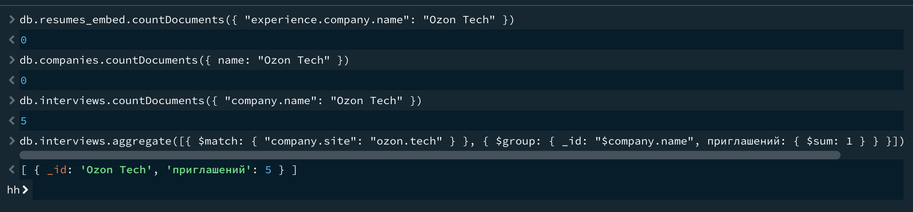
0 в резюме — правка прошла
0 в справочнике — правка прошла
5 в приглашениях — их никто не просил менять, и никто про них не вспомнил
Последний запрос на кадре группирует приглашения по названию компании при том же сайте ozon.tech: в базе теперь два имени одной компании. Формально ошибки нет, ни один запрос не упал — кандидат просто видит разные названия в резюме и в приглашении.
Часть 4 · шаг 3 · то же самое глазами
Слева заявка выполнена, справа — пять документов, о которых забыли
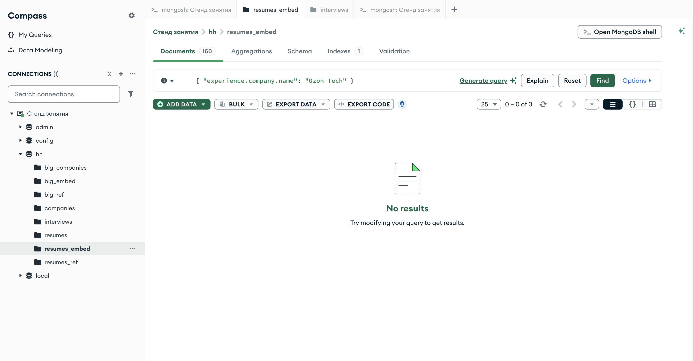
0 – 0 of 0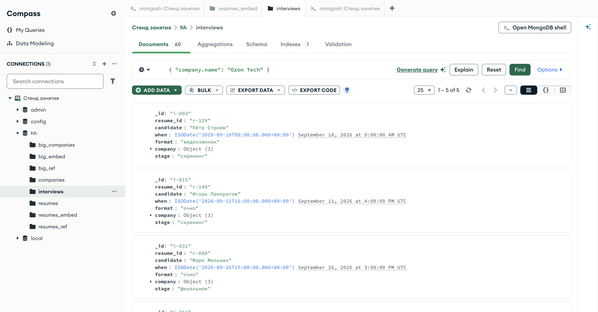
1 – 5 of 5 — старое название живоПравило, которое отсюда следует. Дублировать можно, но каждую копию нужно уметь назвать. Если на вопрос «где ещё лежит это значение» вы отвечаете «сейчас поищу», — вы уже не управляете дубликатом, а ловите его. В ADR это записывается в поле «остаточный риск» вместе с фильтром, которым копия чинится.
Часть 4 · вывод
На изменении выигрывает ссылка — и выигрывает не в скорости, а в числе мест, за которыми надо следить
Одна заявка, две формы. Обе правки отработали за миллисекунды, но одна тронула 49 документов, а вторая — один.
кадр на экране 22Приглашения на собеседование хранят второй экземпляр названия. Про них не вспомнили — и в базе появились два имени одной компании.
кадры на экранах 23 и 24Ничего не упало, ни один запрос не вернул ошибку. Расхождение обнаружит пользователь через неделю — и не в логах, а глазами.
это и есть цена дубликатаСчёт стал 1:1. Вложение выигрывает чтение, ссылка выигрывает изменение — и значит, вопрос «что лучше» ответа не имеет. Осталось разобрать третий довод, который не про скорость и не про удобство, а про предел.
Часть пятая
Предел: до какого размера растёт встроенный массив
05
- 27другая область: вакансия и отклики на неёкадр консоли: размер по
$bsonSize - 28стена: рост документа до предела на одной диаграммечисла с предыдущего кадра
- 29первый отказ: вставка документа за пределомкадр консоли: BSONObjectTooLarge
- 30второй отказ: дописывание по одномукадр консоли: остановились на 86 000
- 31то же самое в документациикадр: 16 мебибайт
- 32кардинальность: три размера связи «один ко многим»кадр консоли: 42–53 резюме на компанию
Часть 5 · шаг 1 · сколько весит отклик
Собираем вакансию с разным числом откликов и меряем документ, не кладя его в базу
db.aggregate([
{ $documents: [ vac(0), vac(1), vac(100), vac(1000), vac(10000) ] },
{ $project: { откликов: { $size: "$responses" },
байт: { $bsonSize: "$$ROOT" } } }])
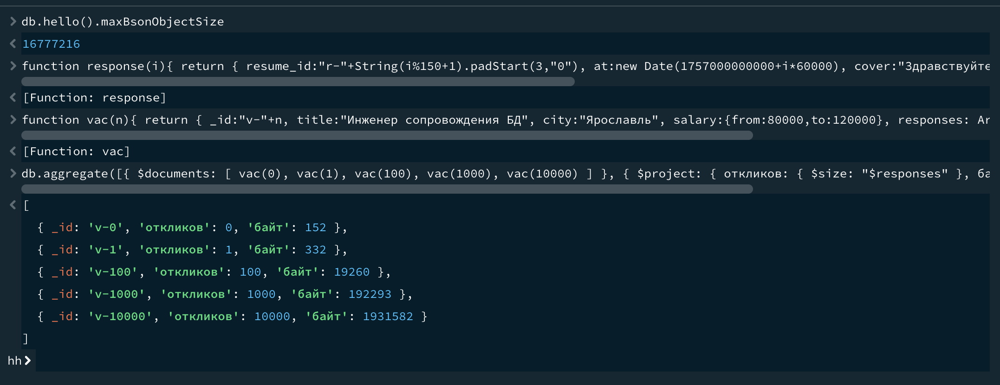
192 байта прибавляет каждый отклик: 192 293 байта на тысяче откликов против 152 у пустой вакансии
Что здесь происходит. $documents позволяет посчитать то, чего в базе ещё нет: документы собираются прямо в конвейере. $bsonSize возвращает их размер в байтах, $$ROOT — это «весь документ целиком».
Первая строка кадра — db.hello().maxBsonObjectSize: сервер сам сообщает предел, 16 777 216 байт. Это не настройка стенда и не особенность Docker, а часть протокола.
Дальше арифметика на одну строку: 16 777 216 ÷ 192 ≈ 87 тысяч откликов. Проверим это на следующих двух экранах.
Часть 5 · шаг 2 · те же числа одной картинкой
Рост встроенного массива упирается в стену, и стена не двигается
16 777 216 байт — предел документа
152 Б0 откликов
332 Б1
19 260 Б100
192 293 Б1 000
1,93 МБ10 000
16,69 МБ86 000 — стоп
Шкала логарифмическаяиначе первые три столбика были бы неразличимы: между 152 байтами и 16 мегабайтами разница в 110 тысяч раз.
Все числа — с кадра 27кроме последнего: он получен отказом на следующем экране.
Для вакансии дворника в Москве87 тысяч откликов — не фантастика, а пара сезонов работы.
Что важно увидеть на этой диаграмме. Рост линейный и предсказуемый — и именно поэтому опасный: никакого предупреждения перед стеной не будет. Документ спокойно растёт годами, а потом одна операция перестаёт работать.
Часть 5 · шаг 3 · первый отказ
Документ за пределом не «медленно вставляется». Он не вставляется совсем
db.vacancies.insertOne( vac(87000) )
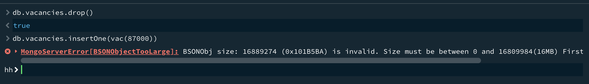
MongoServerError[BSONObjectTooLarge]16 889 274 байта мы попытались отправить при пределе 16 809 984 — вставка отклонена целиком
Читаем сообщение по частям. BSONObjectTooLarge — имя ошибки; первое число — размер того, что отправляли; второе — предел, который назвал сервер. В коллекции после этого ноль документов: вставка не прошла частично, она не прошла вообще.
Почему предел в сообщении не 16 777 216. 16 777 216 — предел на документ, 16 809 984 — на команду вставки целиком: в неё, кроме документа, входит имя коллекции и служебные поля. Разница как раз на этот «конверт».
Часть 5 · шаг 4 · второй отказ, тот, что случается в бою
Никто не вставляет 87 тысяч откликов разом. Их дописывают по одному — и предел приходит однажды в среду
for (let i = 0; i < 200; i++)
db.vacancies.updateOne({ _id: "v-0" },
{ $push: { responses: { $each: batch(i) } } })
// по 1000 откликов за раз, пока сервер не откажет
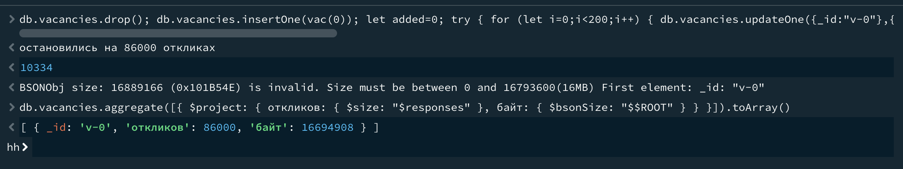
86 000 откликов легли штатно, восемьдесят седьмая тысяча — нет. В документе 16 694 908 байт
Вакансия при этом осталась рабочей: читается, ищется, показывается. Сломалась ровно одна операция — добавление нового отклика. И сломалась не в момент проектирования, а спустя два сезона, у одной конкретной вакансии, в проде.
Правило, которое стоит записать дословно: встроенный массив должен иметь известную верхнюю границу. Мест работы в резюме — десятки, это граница. Откликов на вакансию — сколько угодно, границы нет. Первое вкладываем, второе выносим в отдельную коллекцию со ссылкой на вакансию.
Часть 5 · шаг 5 · сверяем с документацией
Предел записан в разделе Limits and Thresholds — теми же числами, что назвал наш сервер
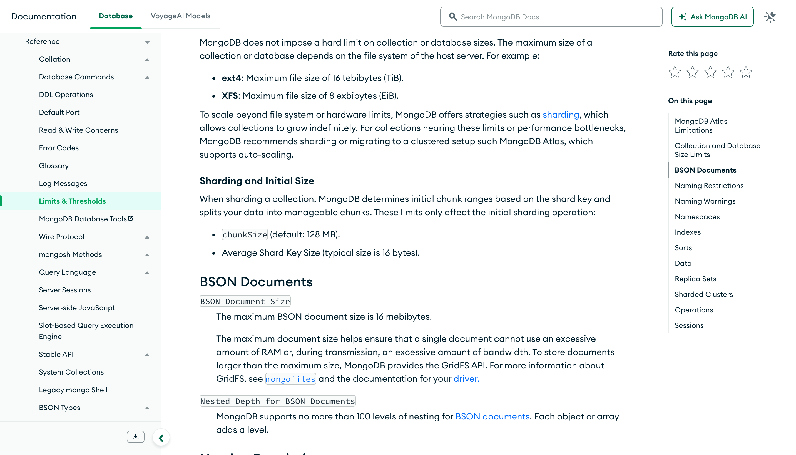
«The maximum BSON document size is 16 mebibytes. The maximum document size helps ensure that a single document cannot use an excessive amount of RAM or, during transmission, an excessive amount of bandwidth.»
MongoDB Manual · Limits and ThresholdsМебибайт — это 1024 × 1024 = 1 048 576 байт, поэтому 16 МиБ и есть те самые 16 777 216, которые сервер вернул в maxBsonObjectSize. Мы получили это число прогоном, не открывая документацию, — и оно сошлось.
Заодно обратите внимание на соседний пункт: вложенность — не больше 100 уровней. До неё вы почти наверняка не доберётесь, но она объясняет логику предела: документ читается и передаётся целиком, поэтому у него должен быть потолок.
Часть 5 · шаг 6 · сколько «многих» в «один ко многим»
Прежде чем решать, посчитайте, сколько элементов на одном родителе
db.resumes_ref.aggregate([
{ $unwind: "$experience" },
{ $group: { _id: "$experience.company_id", резюме: { $sum: 1 } } },
{ $sort: { резюме: -1 } }])
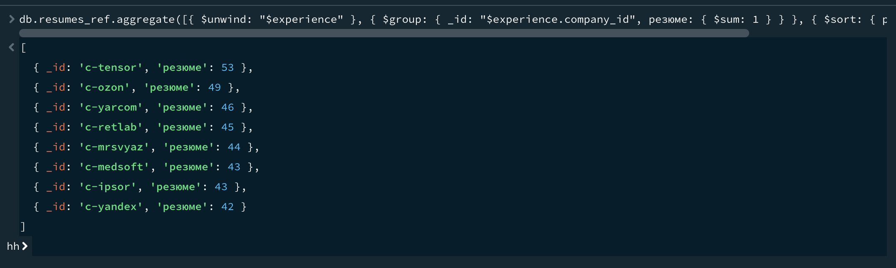
2,43 места работы в среднем на резюме — это «единицы», такой массив вкладывают
42–53 резюме на одну компанию — это «десятки», такой список хранят ссылкой со стороны резюме
∞ откликов на вакансию — границы нет, ссылка обязательна
Как определить размер, не гадая. Задайте один вопрос: сколько таких элементов будет у самого большого экземпляра через два года работы системы. Можете назвать число — это единицы или десятки. Отвечаете «зависит от того, насколько популярна вакансия» — границы нет, вкладывать нельзя.
$unwind разворачивает массив в отдельные строки, $group считает их по ключу. Подробно оба этапа — на занятии 5.
Часть шестая
Правило: как выбрать форму и как записать решение
06
- 34три вопроса, которыми решается любая связьглавная мысль занятия
- 35решающая карта: шесть признаковсправка, которая остаётся у вас
- 36та же карта словами MongoDBкадр: официальная таблица сценариев
- 37довод, который не про скорость: атомарностькадр консоли: отказ транзакции на нашем стенде
- 38гибрид: ссылка плюс вырезкачто дублируем сознательно
- 39разбор четырёх чужих связейпрежде чем браться за свои
Часть 6 · шаг 1 · главная мысль занятия
Форму документа выбирает не схема данных, а список операций над ними
Вопрос 1 · читаем вместе или порознь?
Если данные почти всегда показываются вместе — карточка резюме с компаниями, чек с позициями, — вкладывайте. Каждое разделение превращается в лишнее обращение на каждый показ. Доказано в части 3: 497 мс против 784.
читаем вместе → вложение
Вопрос 2 · меняются вместе или отдельно?
Если у данных разный ритм изменения — резюме правит соискатель, а название компании меняет отдел партнёрств, — выносите. Иначе одна правка размажется по сотням документов. Доказано в части 4: 49 документов против одного.
меняются порознь → ссылка
Вопрос 3 · есть ли у роста граница?
Если число вложенных элементов не ограничено предметной областью, вкладывать нельзя вообще, независимо от ответов на первые два вопроса. Доказано в части 5: стена на 86 000 элементах.
роста без границы → только ссылка
Что делать, когда ответы противоречат
Читаем вместе, но меняется порознь — самый частый случай. Он честно решается гибридом: ссылка плюс маленькая копия тех полей, которые нужны для показа. Разберём на экране 38.
противоречие → вырезкаЭти три вопроса задаются про каждую связь отдельно, а не про модель целиком. В одном резюме опыт работы вложен, компания вынесена, а отклики этого соискателя лежат в третьей коллекции — и это нормальная, а не противоречивая модель.
Часть 6 · шаг 2 · справка, которая остаётся у вас
Решающая карта: признак связи — и сторона, в которую он тянет
признаккак проверить на своих данныхтянет к
Читаются вместеоткройте макет экрана: если оба набора данных попадают в один экран, они читаются вместеВЛОЖЕНИЕ
Меняются одной операциейправка затрагивает и родителя, и вложенное — значит, это одна запись, и она должна быть атомарнойВЛОЖЕНИЕ
Часть не существует без целогоудалите родителя мысленно: если дочерние данные теряют смысл, они принадлежат емуВЛОЖЕНИЕ
Значение меняется у себяу данных есть собственный владелец и свой ритм правок — как у названия компанииССЫЛКА
Одно значение на многихпосчитайте, во скольких документах повторяется: 49 из 150 — это уже справочникССЫЛКА
Рост без верхней границыназовите максимум за два года: не получается — вкладывать нельзяССЫЛКА
Карта не голосует большинством. Шестой признак — запрещающий: одна «ссылка» в нём перевешивает три «вложения» сверху, потому что предел документа не обходится аккуратностью.
Часть 6 · шаг 3 · сверяем карту с документацией
MongoDB печатает ту же карту, только строками сценариев
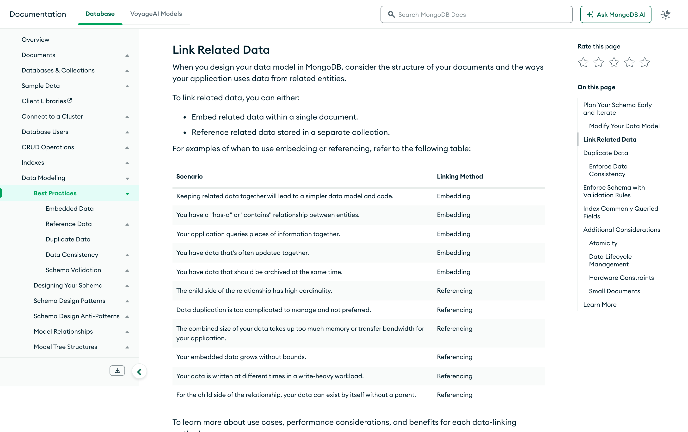
Строки за вложение: данные читаются приложением вместе, меняются вместе, архивируются вместе, отношение «состоит из». Это первые три признака нашей карты, только другими словами.
Строки за ссылку: высокая кардинальность у дочерней стороны, дублирование дорого поддерживать, суммарный объём давит на память и канал, embedded data grows without bounds, запись идёт часто и по разным местам, дочерняя часть существует сама по себе.
Проверьте себя: закройте правую колонку рукой и предскажите ответ по каждому сценарию. Если предсказываете все двенадцать — карта уложилась в голову, и на приёмке вы объясните свой выбор без подсказки.
Часть 6 · шаг 4 · довод, который не про скорость
Операция над одним документом атомарна. Над двумя коллекциями — уже нет
const s = db.getMongo().startSession();
s.startTransaction();
s.getDatabase("hh").companies.updateOne({ _id: "c-ozon" }, …)
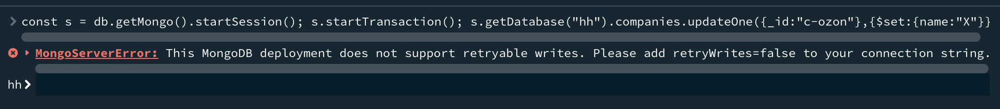
Транзакции в MongoDB есть, но одиночному серверу они недоступны — согласованность между двумя коллекциями на нашем стенде обеспечить нечем, кроме порядка операций в приложении
А внутри одного документа согласованность бесплатна. updateOne применится целиком или не применится вовсе: резюме не окажется в состоянии «зарплату поменяли, а должность ещё нет».
Как это влияет на выбор формы. Если два набора данных обязаны меняться вместе или не меняться вообще — это сильный довод вложить их в один документ. Не ради скорости, а ради того, что промежуточного состояния не бывает.
Часть 6 · шаг 5 · третий вариант
Вырезка: ссылка остаётся, но рядом лежит копия одного-двух полей — тех, что нужны для показа
hh.resumes · гибридная формассылка + вырезка
{ _id: "r-001", fio: "Елена Белова", experience: [ { role: "стажёр", months: 37, company_id: "c-ipsor", // ссылка — источник истины company_name: "ИП Сорокин" // вырезка — чтобы показать список } ] }
Что купили: список резюме рисуется одним запросом — название компании уже в документе. Карточка, где нужны сайт, отрасль и число сотрудников, по-прежнему идёт за ними в companies
Чем заплатили. Копия названия вернулась, а с ней и заявка CR-014: при переименовании нужно пройти по резюме. Но теперь это осознанный дубликат: он назван, он один, и правится одной операцией по известному фильтру { "experience.company_id": "c-ozon" } — по идентификатору, который не меняется.
Правило вырезки. Дублируем только то, что либо почти не меняется, либо должно остаться историческим. Название компании на момент подачи резюме — как раз второй случай: во многих системах его специально не обновляют, потому что человек работал в компании с тем названием.
Часть 6 · шаг 6 · за клавиатуру · разбор
Четыре связи из разных областей. Задайте три вопроса и назовите форму — вслух, до того как прочитаете подпись
Заказ и его позиции
Интернет-магазин. Позиции показываются только вместе с заказом, меняются вместе с ним, после оформления не меняются вообще. Больше сорока позиций в заказе не бывает.
ответ: вложение — все три вопроса за него
Товар и отзывы на него
Тот же магазин. Отзывы пишут годами, у популярного товара их тысячи, читаются они отдельной страницей с постраничной выдачей, а карточка товара — без них.
ответ: ссылка — границы роста нет
Тикет поддержки и его автор
Служба поддержки. В списке тикетов нужно имя автора, в карточке — его телефон и договор. Сотрудники увольняются, имена меняются при смене фамилии.
ответ: ссылка плюс вырезка имени
Показания счётчика и квартира
ЖКХ. Показания приходят ежемесячно и не удаляются никогда, квартира одна и та же двадцать лет, отчёты строятся по показаниям за период, а не по квартире.
ответ: ссылка со стороны показанийЕсли по какой-то связи ваш ответ разошёлся с подписью — это хороший разговор на паре, а не ошибка. Назовите операцию, из-за которой вы решили иначе: спор о форме документа всегда решается операцией, а не вкусом.
Практика · 45 минут на своём стенде
Что делаем руками до конца пары
- 01Поднять стенд занятия и загрузить10 мин
seed/:companies,resumes_embed,resumes_ref,interviews. Проверить счётчики: 8 · 150 · 150 · 60. - 02Прогнать10 мин
queries.mongodb.jsи получить свои числа по обеим формам. Сверить с экранами 8, 11 и 12: расхождение в миллисекундах нормально, расхождение в числе документов — нет. - 03Выполнить заявку CR-014 в обеих формах и после этого найти забытую копию в5 мин
interviews— тем же фильтром, что на экране 23. - 04Довести встроенный массив до предела: скрипт5 мин
grow.mongodb.jsдописывает отклики по тысяче, пока сервер не откажет. Записать, на каком числе остановилось у вас. - 05Взять три связи своей предметной области, задать по каждой три вопроса с экрана 34 и записать выбор в10 мин
ADR-002.md. - 06Собрать под выбранную форму5 мин
seed.jsonи два запроса, которые доказывают, что она работает: один на чтение, один на изменение.
Пункт 4 — намеренная поломка, она обязательна: на приёмке спрашивается текст ошибки и число, на котором остановился рост. Пересказ «там был предел 16 мегабайт» не принимается.
Ошибки · что чаще всего ломается в этой теме
Пять ошибок проектирования, каждая со своим симптомом
Модель собрана «как в учебнике по нормализации», а потом выясняется, что главный экран приложения требует четырёх обращений к базе.
симптом: на каждый экран — свой joinОтклики, комментарии, события — всё внутри родителя. Работает год, потом одна запись перестаёт обновляться.
симптом:BSONObjectTooLarge на одном документе из миллиона
Значение продублировано осознанно, но нигде не записано, где ещё оно лежит. Правку делают в одном месте из трёх.
симптом: одна сущность под двумя именами$lookup по site вместо _id: 415 мс вместо 15 на пятистах карточках. На тысяче пользователей это уже отказ.
arrayFilters
Позиционный оператор $ меняет только первый подходящий элемент массива. Если компания в резюме встречается дважды, вторая останется старой.
modifiedCount совпал, а данные нет
Опыт вложен, компания вынесена, отклики в третьей коллекции — это не мешанина, а результат трёх отдельных решений. Мешанина — когда решений не было.
проверка: у каждой связи есть строка в ADRФорма сдачи · архитектурное решение
ADR-002: одна страница, на которой видно не только выбор, но и его цену
КонтекстКакая связь и какие операции
Две сущности, объём каждой, и три-четыре операции, которые с ними выполняются чаще всего. Без операций весь документ превращается в пересказ занятия.
РешениеФорма и её границы
«Опыт работы вкладываем, компанию выносим по company_id, название дублируем вырезкой». Одна фраза, из которой понятно, что где лежит.
ЦенаЧем платим и сколько это в числах
Ваш собственный замер: сколько документов трогает правка, сколько обращений нужно на чтение, на сколько выросла коллекция. Числа со своего стенда.
АльтернативаЧто рассматривали и почему отклонили
Вторая форма и конкретная причина отказа: «полный embedding отклонён — массив откликов не имеет верхней границы».
Остаточный рискЧто останется больным
«Копия названия в резюме требует правки при переименовании; фильтр правки — вот такой». Риск, названный заранее, перестаёт быть аварией.
ПроверкаЧем доказываем
Два запроса из queries.mongodb.js с числами и один намеренный отказ. Приёмка идёт по ним, а не по формулировкам.
Бланк лежит в стенде занятия: ADR-002.md. Заполняется на паре, дописывается дома — но пустых полей на приёмке быть не должно, включая «остаточный риск»: модели без остаточного риска не бывает.
Границы темы · что мы сегодня не решали
Три вопроса, которые честно откладываются на следующие занятия
Сегодня мы выбрали форму, но ничто не мешает записать резюме без company_id или с числом в поле названия. Проверку формы включает schema validation.
Мы увидели, что соединение по неиндексированному полю в 27 раз дороже, но не смотрели, что именно делает сервер. Это план запроса и индексы.
кадр плана запроса лежит вshots/ — читать его будем на том занятии
Модель, выбранная сегодня, через полгода окажется неудачной — это нормально. Повторяемая миграция документов v1 → v2 и есть тема пятого занятия.
заодно там же —$unwind, $group и отчёты по обеим формам
Сквозной артефакт дисциплины на конец занятия: MongoDB model v0.2 — модель занятия 1, у которой теперь есть обоснование по каждой связи и записанная цена. К зачёту она станет документным контуром DATA PLATFORM v1.0.
Итог занятия
Что теперь считается, а не выбирается на глаз
3вопроса вместо спора о вкусах
49документов правит одна заявка во вложенной форме
1документ — в ссылочной
86000откликов до стены
16777216байт — предел, который не обходится
2формы и одна вырезка между ними
Вопрос на выход. В вашей модели есть связь, где данные читаются всегда вместе, но меняются по отдельности. Какую форму вы выберете и какую именно строку добавите в раздел «остаточный риск» своего ADR-002? Ответ — одной фразой, вслух или в чат группы.
Разбор всех чисел этого занятия — в LESSON_PLAN.md рядом с колодой: там же указано, каким запросом получено каждое из них. Кнопка S открывает источники.
Домашнее задание · к следующему занятию
Максим Николаевич не хочет задавать домашнее задание. Но очень хочет
- 1Три связи и ADR-002
В своей предметной области выберите три связи между сущностями. По каждой ответьте на три вопроса с экрана 34 и запишите решение в
ADR-002.md: форма, цена, отклонённая альтернатива, остаточный риск. - 2Обе формы на стенде и замер
Одну из трёх связей соберите двумя способами — вложением и ссылкой — в двух коллекциях. Замерьте на своих данных: чтение карточки, правку общего значения и объём коллекций. Числа — в
queries.md. - 3Своя стена
Найдите в своей модели связь без верхней границы и доведите её до отказа: дописывайте элементы, пока сервер не ответит. Приложите текст ошибки и число, на котором остановились.
Домашнее задание · порядок сдачи
Как сдаём
Что сдаём
Папка lesson_02/: ADR-002.md, queries.md с замерами, два файла данных под обе формы и вывод отказа из задания 3.
Ветка и PR
Ветка hw-02, коммит с содержательным сообщением, Pull Request в собственную main. В описании — одна фраза про самую спорную из трёх связей.
Срок
До начала занятия 3. Работы после срока принимаются, но разбираются в чате, а не на паре.
Про ИИ
Модель можно просить причесать формулировки ADR — я сам так делаю. А вот числа в queries.md должны быть получены на вашем стенде: на приёмке вы повторяете любой замер и объясняете, почему выбрана эта форма.
Критерий приёмки: по каждой из трёх связей вы называете операцию, которая решила выбор, показываете число со своего стенда и говорите, что останется больным. Три ответа «так удобнее» — работа возвращается.
В диалоге печати снимите галочку «Колонтитулы», иначе браузер допишет дату и адрес страницы.